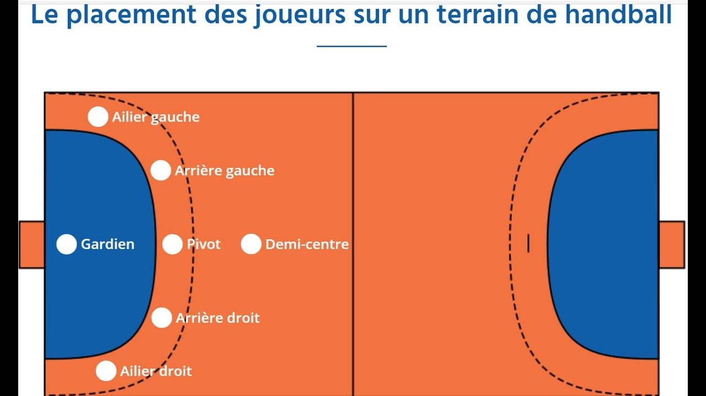

Le Handball est un sport collectif consistant à opposer deux équipes sur le terrain, le match se déroule en deux mi-temps de 30 minutes, chacune séparées par une pause à la mi-temps de 10 minutes. Chaque équipe se compose de sept joueurs sur le terrain et de 5 remplaçants maximum. Les joueurs sur le terrain sont : un gardien de but et six joueurs de champ, répartis la plupart du temps en deux ailiers (droit et gauche), deux arrières (droit et gauche), un demi-centre et un pivot. Le nombre de remplacements est illimité.
Pour avancer, il faut dribler. Le joueur n'a pas le droit de faire plus de 3 pas sans dribler, en revanche il peut faire 3 pas avant et après avoir dribler, mais il ne peut pas redribler une deuxième fois et il ne peut pas garder le ballon en restant immobile plus de 3 secondes.
La zone des 6 mètres appartient au gardien, les joueurs n'ont pas le droit d'y accéder lorsqu'ils possèdent le ballon.
Les buts ont une hauteur de 2 mètres et une largeur de 3 mètres.
L'équipe qui obtient le plus de points à la fin de la partie remporte le match.
Pour marquer un but, le ballon doit dépasser la ligne de but entre les deux potos et la bar transversale.
Le joueur doit lâcher le ballon avant d'être dans la surface des 6 mètres.
L'attaquant a donc le droit de sauter au-dessus de la surface de but et effectuer son tir avant de retoucher le sol, afin d’être plus près du but.